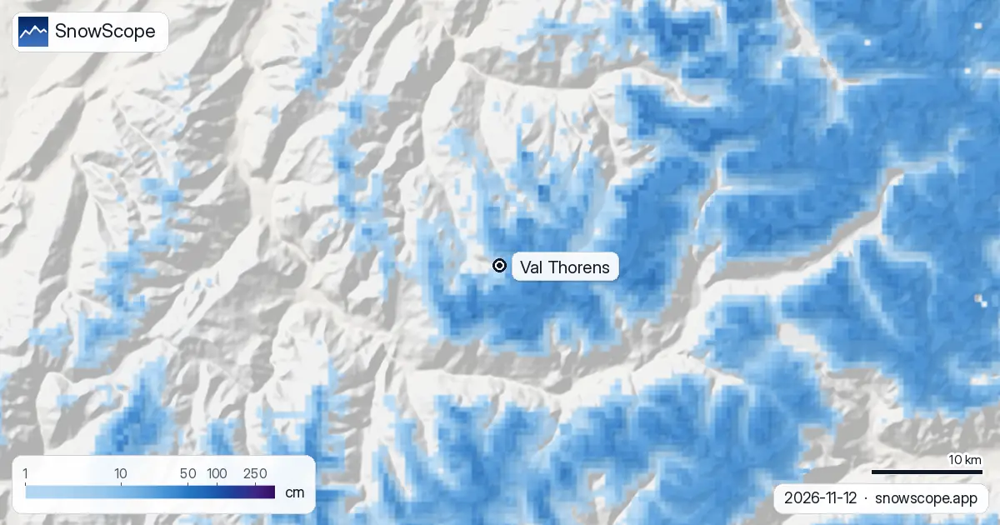
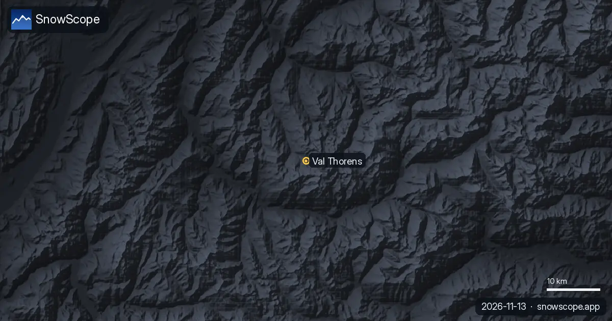

Nevadas en Val Thorens: 27 cm esta semana en la cima, 86 cm más en camino (13 de noviembre de 2026)
En Val Thorens cada nevada cuenta más que casi en cualquier otro sitio de Les 3 Vallées, porque el pueblo está a 2300 m y lo que cae allí es casi siempre nieve, no lluvia. En los últimos siete días nuestras cifras suman 27 cm en la cima (3175 m), 17 cm a 2498 m, cerca de la altura del pueblo, y 3 cm a 1822 m, al final de la pista más baja. Lo que hay en el suelo hoy es otra cifra: 50 cm en la cima, 8 cm a 2498 m y nada a 1822 m.
Consulta la previsión de nieve en tiempo real de Val Thorens en la app SnowScopeEspesor de nieve, alertas de nieve polvo y mapa 3D, gratis.
Caída frente a acumulada: la semana en un solo registro
Casi toda la nieve de la semana llegó de golpe: 16 cm en la cima y 10 cm a 2498 m en las últimas 24 horas, 18 cm en la cima en dos días. Sumando la semana salen 27 cm en la cima para un espesor de 50 cm: la cima ya tenía una base de tormentas anteriores.
A 2498 m la cuenta va al revés: cayeron 17 cm, quedan 8 cm. La nieve nueva es esponjosa y se asienta rápido, el suelo en noviembre todavía está lo bastante templado para comerse la primera capa, y el viento en las laderas abiertas alrededor del pueblo mueve el resto. Por eso un total de nevada y un espesor de nieve nunca deben leerse como la misma cifra.

Los próximos siete días
Mañana sigue tranquilo, apenas 2 cm. Después se encadena una larga serie de días de nieve: 86 cm en la cima, 73 cm a 2498 m y 52 cm a 1822 m en la semana.
Antes de escribir contrastamos nuestro pronóstico con otros pronósticos. Coinciden en una semana grande y van más alto que nosotros: de 96 a 148 cm en la cima y de 94 a 130 cm a 2498 m. Su cota de nieve está entre unos 1500 y 1700 m, muy por debajo del pueblo: en Val Thorens es un episodio de nieve de arriba abajo. Solo al final de la pista más baja, a 1822 m, cerca de un tercio del agua llega como lluvia en esos pronósticos. Nuestros 86 cm son la cifra prudente; el total real en la cima podría pasar bastante del metro.
Cómo se construye normalmente la temporada
En nuestros 46 inviernos pasados (1980-81 a 2025-26) la nieve que se queda llega a la cima hacia el 27 de septiembre en un invierno medio, a 2498 m hacia el 4 de octubre y a 1822 m hacia el 20 de octubre. Un noviembre habitual deja 34 cm en el suelo a 2498 m, aunque uno de cada diez noviembres solo tiene 7 cm y uno de cada diez 79 cm. Diciembre lo lleva a 90 cm, enero a 144 cm.
Una vez llega el invierno, se queda: cerca de la altura del pueblo el suelo está blanco 232 días en un invierno medio, y 21 semanas tienen 50 cm o más en 9 de cada 10 inviernos. El pico medio allí es de 238 cm, con 164 cm en el invierno más pobre y 316 cm en el más rico.
Cuándo compensan las nevadas
La nieve más gruesa en la cima suele llegar tarde, en abril (289 cm), mucho después de las semanas de más gente. Cerca del pueblo la mejor semana de nuestra serie es la décima del año, a principios de marzo, con un espesor medio de 209 cm. El invierno pasado llegó a 305 cm en la cima, 237 cm a 2498 m y 165 cm a 1822 m.
Una nota honesta sobre la tendencia: el pico medio en la cima bajó de 386 cm en los primeros 15 inviernos a 342 cm en los últimos 15, y los días con nieve cerca del pueblo de 255 a 225. Val Thorens pierde aun así menos que las estaciones más bajas, simplemente porque empieza más arriba. El dominio cartografiado suma 115 km de pistas y 27 remontes entre 1822 m y 3175 m, con la Cime de Caron a 3200 m por encima.
Consejos para esquiadores
- Lea el pronóstico como nieve desde el pueblo hacia arriba: la cota de lluvia se queda esta semana muy por debajo de 2300 m.
- Una semana con tanta nieve nueva significa carreteras cortadas y remontes lentos en los días más fuertes: suba un día tranquilo.
- La nieve nueva cargada por el viento es la trampa clásica de aludes al inicio de temporada: lea el boletín de Météo-France antes de salir de las pistas.
Más mapas (sitios externos)
Referencias y créditos
- Val Thorens, web oficial (remontes, fechas de apertura, parte de nieve) www.valthorens.com/
- Wikipedia, Val Thorens (alturas del pueblo y de la cima), consultada el 13/11/2026 en.wikipedia.org/wiki/Val_Thorens
- Météo-France, tiempo de montaña y boletines de aludes meteofrance.com/meteo-montagne
Sobre estas cifras
Nevadas y espesor: el modelo de nieve de SnowScope, pasada del 12 de noviembre de 2026 actualizada el 13 de noviembre, a tres alturas de Val Thorens (una estimación para la zona, no mediciones de la estación). Horquilla de la semana y cota de nieve: los pronósticos independientes que comparamos antes de publicar (ECMWF, ICON, GFS, GEM). Histórico: 46 inviernos pasados (1980-81 a 2025-26), un modelo del pasado corregido por altitud. Alturas del pueblo y de la cima: Wikipedia, consultada el 13/11/2026. Longitud de pistas y número de remontes: cartografía OpenSkiMap. Los pronósticos cambian: mire el mapa antes de ir.
Boletines oficiales de aludes: Météo-France – Bulletin d'estimation du risque d'avalanche
Citar este informe
Para investigación, docencia o prensa: cifras y gráficos reutilizables libremente bajo CC BY 4.0 con esta cita.
SnowScope (2026), Nevadas en Val Thorens: 27 cm esta semana en la cima, 86 cm más en camino (13 de noviembre de 2026), https://snowscope.app/blog/es/2026/11/val-thorens-snowfall-13-november-2026.html, consultado el 2026-11-13
SnowScope (Atlas Labs). (2026, November 13). Nevadas en Val Thorens: 27 cm esta semana en la cima, 86 cm más en camino (13 de noviembre de 2026). SnowScope snow reports. https://snowscope.app/blog/es/2026/11/val-thorens-snowfall-13-november-2026.html
BibTeX
@misc{snowscope2026valthorenssnowfall13nove,
author = {{SnowScope (Atlas Labs)}},
title = {Nevadas en Val Thorens: 27 cm esta semana en la cima, 86 cm más en camino (13 de noviembre de 2026)},
year = {2026},
month = nov,
howpublished = {\url{https://snowscope.app/blog/es/2026/11/val-thorens-snowfall-13-november-2026.html}},
note = {Published 2026-11-13 13:02 UTC; accessed 2026-11-13}
}· CC BY 4.0 · Métodos, datos y herramientas →
Val Thorens: nieve y temperatura según la altura, este invierno vs el pasado (herramientas) →
Sigue Val Thorens
Gratis: un aviso cuando llega la nieve y la previsión cada mañana.
Más partes de nieve

Dónde diciembre de 2026 parece más o menos nevado en los Dolomitas, de Val Gardena a Cortina: la previsión estacional europea, nuestro mapa y las probabilidades de una Navidad blanca.

La nieve de hoy en Cortina, la previsión estacional europea para diciembre y nuestras probabilidades de una Navidad blanca en el este de los Dolomitas.

La nieve de hoy en Grands Montets, la previsión estacional europea para diciembre y nuestro mapa de dónde diciembre parece más o menos nevado alrededor del Mont Blanc.